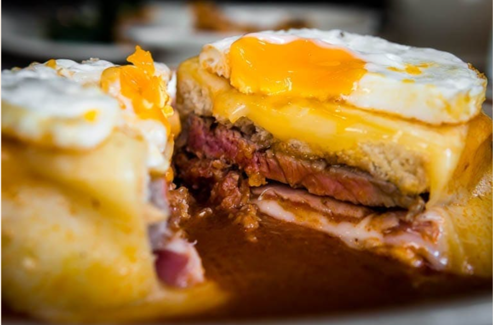

Francesinha is a sandwich from northern Portugal, especially the Porto region. It has two slices of bread and various meats, covered with melted cheese and served with sauce and fries. The sauce is a unique parte of the sandwich, with each restaurant having its own recipe made from tomatoes broth, piri piri spices, beer, and Porto wine.
It's not an everyday dish, but it's worth trying at least once in your life. If you visit Porto, make sure to try francesinha.